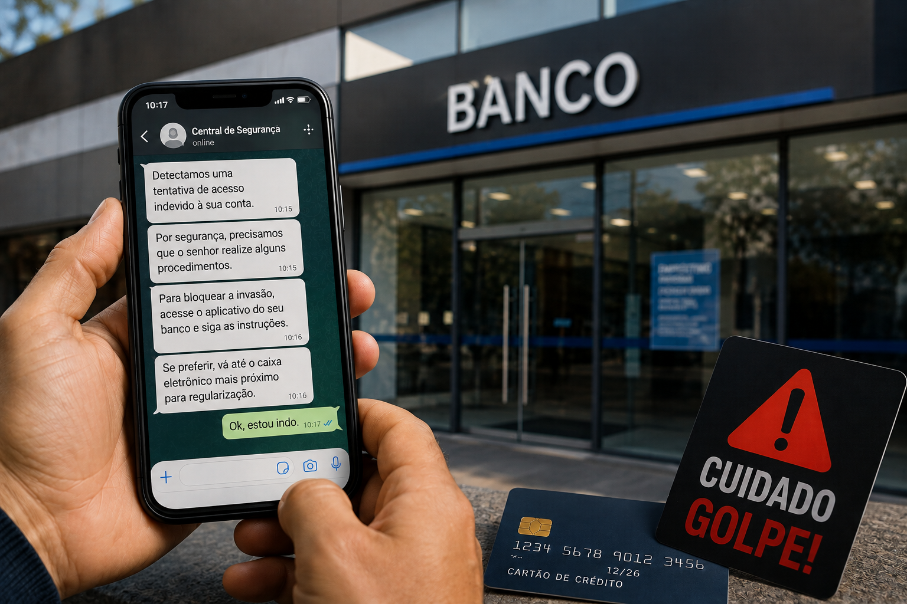
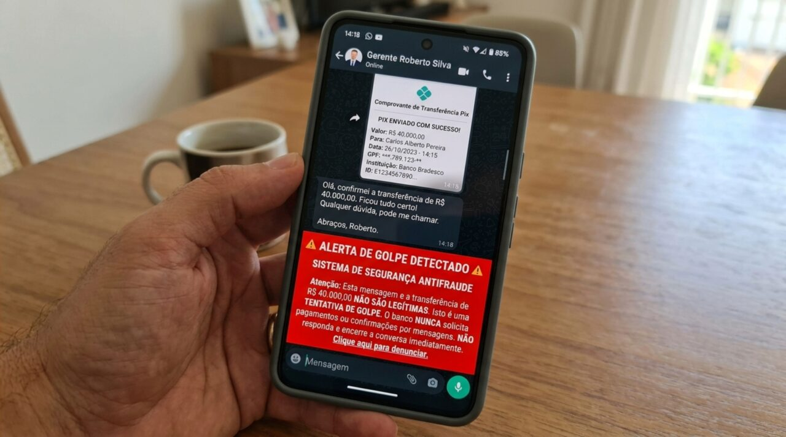

Entenda como os criminosos agem, aprenda a se proteger
e saiba o que fazer se você for vítima.
O sistema do PIX é seguro! Os golpistas usam a manipulação (engenharia social) para convencer você a fazer a transferência por conta própria.
O golpista usa a foto de um familiar em um número desconhecido e pede dinheiro emprestado com urgência, alegando que o aplicativo do banco travou.

Você recebe uma ligação dizendo que sua conta foi invadida e que você precisa fazer um "PIX teste" ou transferir o saldo para uma conta "segura".

Muito comum em vendas online. O golpista envia um comprovante de PIX editado ou um comprovante de "agendamento" e cancela logo em seguida.
O primeiro passo é manter a calma e ligar diretamente para a pessoa por um canal seguro antes de realizar qualquer transferência.
Golpistas sempre criam situações de extrema pressa para impedir que você pense com clareza. Respire e verifique.
Antes de concluir o PIX, confira com atenção o nome completo e o banco de quem vai receber o valor na tela do seu aplicativo.
O primeiro passo é manter a calma. Reúna imediatamente todas as provas possíveis (prints das conversas, comprovantes da transferência, número que entrou em contato) e procure seu banco para tentar acionar o MED (Mecanismo Especial de Devolução).